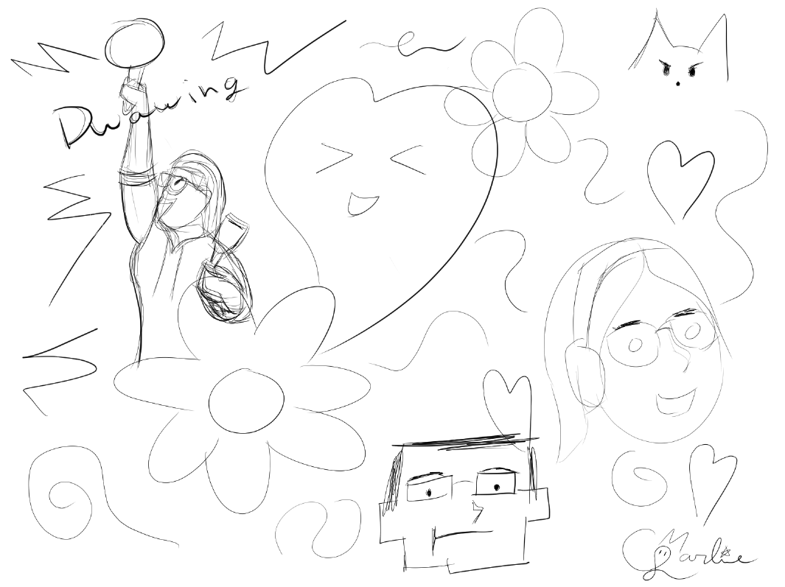
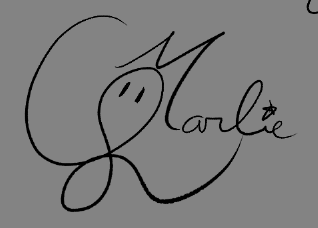
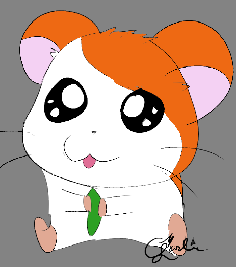
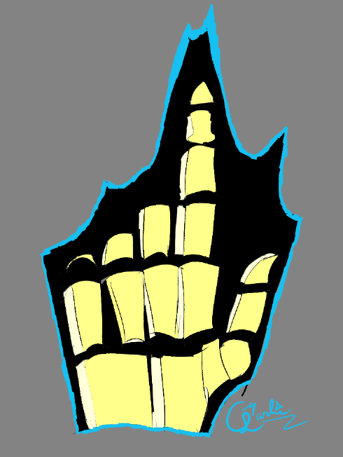
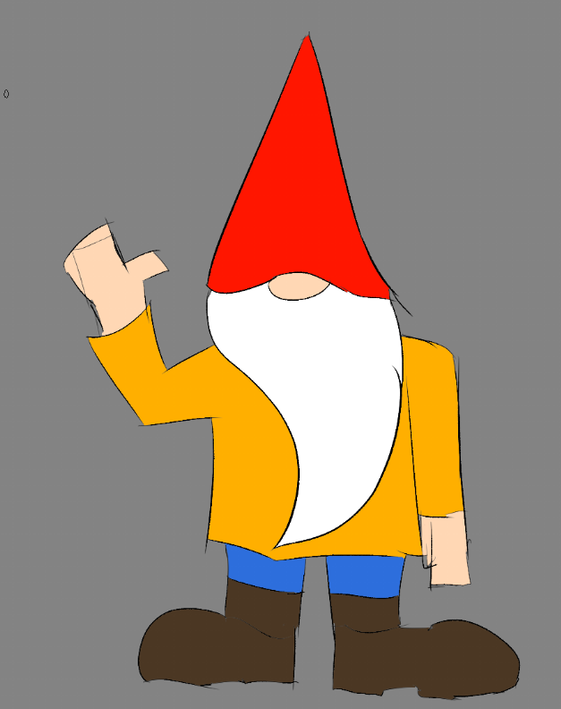
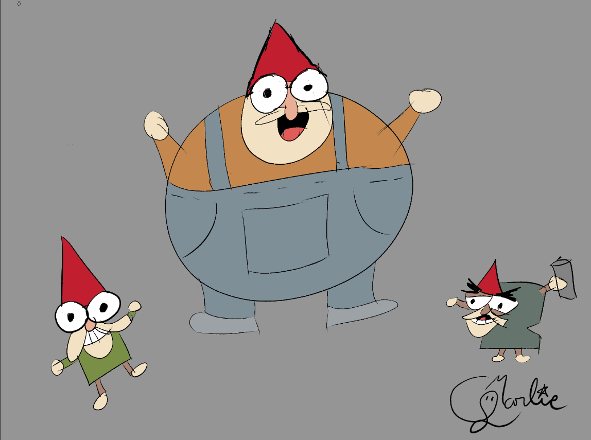
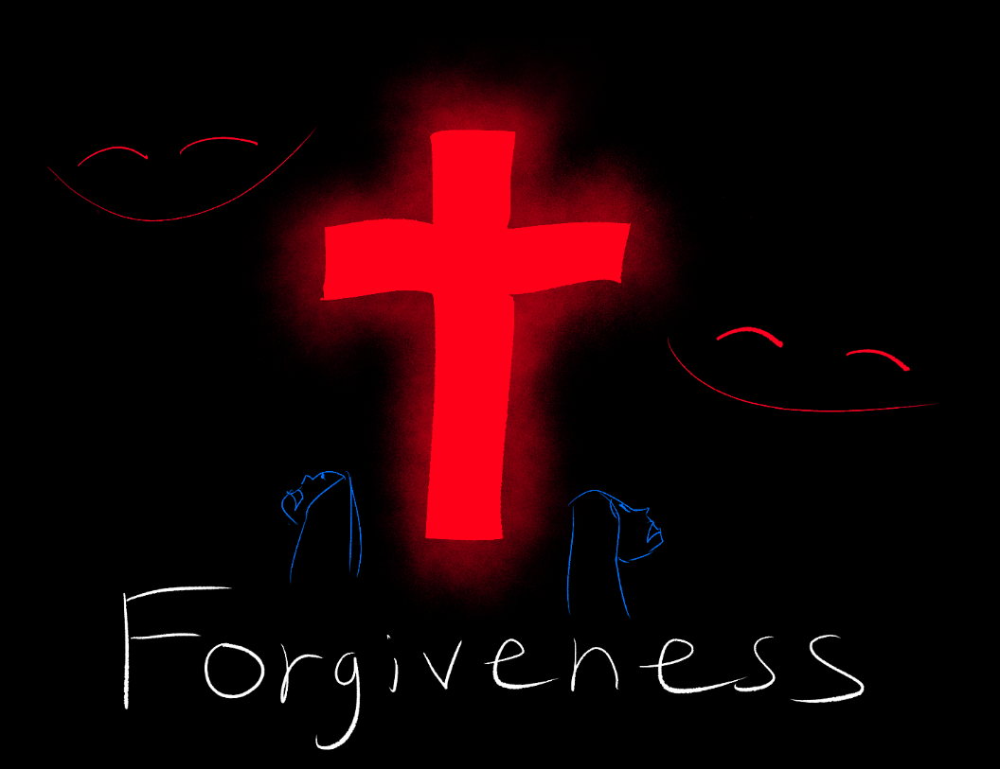

It's been a while since I've journaled. Shortly after my last entry, Rose and I watched Adam for a week.
It honestly wasn't that bad outside of the fact that the AC broke AND the power went out shortly after it was fixed.
Still we survived.
And got paid.
I also finally got a drawing pad and I've been doing a fair amount of drawing with it, though I still feel rather clueless regarding the process of drawing.

I've also created and have been practicing a cute little signature! I'm honestly very proud of it.

I also asked all of my friends to suggest something for me to draw. Here's what I've made so far:




